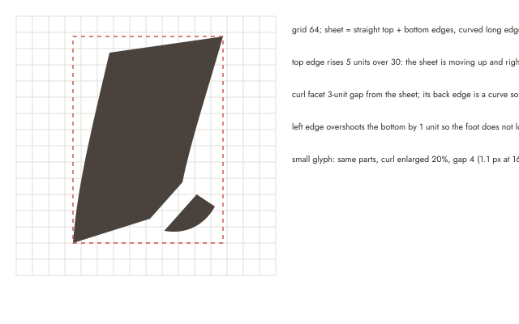

Flier Studio brand
Mark R3 "In flight": a sheet leaving the press, its corner curling as it lifts. Picked by the owner on 2026-10-28 (LOGO-1 decision D5). Two parts, one colour, no live type.
1. Mark and lockups
Mark
Reversed, on primary
Horizontal lockup, light
Horizontal lockup, dark
Stacked lockup, light
Stacked lockup, dark
Small glyph, 16 and 32 px at 1x
One colour
Lockup rules: the wordmark (Fraunces, "Flier" 560 / "Studio" 380, outlined to paths) sits on the mark's bottom edge in the horizontal lockup and on the mark's left edge in the stacked one. The mark leads; the type never sets in a heavier weight than the mark's ink.
2. Construction

- grid 64; sheet = straight top + bottom edges, curved long edges (cubic, same tension both sides)
- top edge rises 5 units over 30: the sheet is moving up and right, not falling
- curl facet 3-unit gap from the sheet; its back edge is a curve so it reads as paper, not a dog-ear triangle
- left edge overshoots the bottom by 1 unit so the foot does not look clipped
- small glyph: same parts, curl enlarged 20%, gap 4 (1.1 px at 16)
3. Clear space and minimum sizes
Clear space = 1 c on every side
c = the curl's height = 20% of the mark's height. The same 1 c applies around both lockups.
Minimum sizes
| Use | Screen | |
|---|---|---|
| Mark | 16 px (small glyph at 24 px and below) | 6 mm |
| Horizontal lockup | mark 24 px tall | 30 mm wide |
| Stacked lockup | mark 64 px tall | 20 mm wide |
4. Colour
Values come from @dloizides/design-tokens preset flier (FLIER_TOKENS). The mark adds no new colour, so no token change.
| Role | Token value | On | Contrast |
|---|---|---|---|
| primary (light mark) | #4a423c | surface #fbfaf8 | 9.43:1 |
| text (lockup, light) | #2f2925 | surface #fbfaf8 | 13.74:1 |
| text on page (OG, card) | #2f2925 | page #ebe8e3 | 11.73:1 |
| dark.brandFill (dark mark + lockup) | #e8dccb | dark.background #1c1a17 | 12.84:1 |
| dark.brandFill on dark.surface | #e8dccb | dark.surface #25221e | 11.71:1 |
| dark.brandFill on primary (app icon) | #e8dccb | primary #4a423c | 7.27:1 |
5. Do not
6. Motion
Intro, once per session (ends 580 ms)
Micro, hover / focus / loading (280 ms)
Hover or tab to it.
Reduced motion
No animation; the static mark at once.
| Beat | Layer | Property | From → to | Duration | Easing | Start |
|---|---|---|---|---|---|---|
| Intro 1 | sheet | translate, rotate, opacity | (-10, 10) px, 12°, 0 → rest | slow 300 | decelerate | 0 |
| Intro 2 | curl | rotate, scale, opacity | 28°, 0.6, 0 → rest | slow 300 | decelerate | 280 |
| Micro | curl / sheet | rotate / translateY | -10° / -1.5 px and back | 280 (2 x fast) | standard | 0 |
No overshoot (visual-foundation R10). Beats as data: exports/motion.json, played by @dloizides/ui-motion/logo playLogo and bindMicro on exports/mark.svg.
7. Export files
| File | What |
|---|---|
favicon.svg | vector, small glyph, colour swaps under prefers-color-scheme |
favicon.ico | 16 + 32 + 48 |
favicon-16.png / favicon-32.png | transparent; ink 33.9% / 33.6% (band 20-35%) |
apple-touch-icon.png | 180x180, opaque |
icon-192.png / icon-512.png | PWA purpose any |
icon-512-maskable.png | PWA maskable, mark spans 62% tall, 0 px outside the 80% circle |
og-image.png | 1200x630, stacked lockup + tagline on one left edge |
landing-card-1280x800.png | dloizides.com app card |
lockup-header-light.svg / -dark.svg | horizontal, outlined, 0 live text |
lockup-stacked-light.svg / -dark.svg | stacked, outlined |
mark.svg | named layers with data-motion-layer |
mark-mono.svg / mark-reversed.svg | one colour / reversed |
mark-animated.svg | intro as CSS keyframes, reduced-motion query inside |
motion.json | intro + micro beats for @dloizides/ui-motion/logo |
Each PNG was rendered at its real size and checked at 1x. Manifest and <link rel="icon"> wiring is frontend-dev's change.